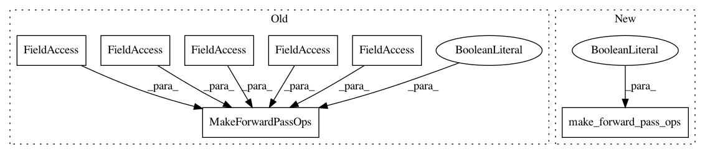

2c7a2997c28d0be732e4157e924dce87bcf56236,ml/rl/training/discrete_action_trainer.py,DiscreteActionTrainer,update_model,#DiscreteActionTrainer#Any#Any#Any#,78
Before Change
model = C2.model()
q_vals_target = C2.StopGradient(q_vals_target)
output_blob = C2.NextBlob("train_output")
MakeForwardPassOps(
model,
self.model_id,
states,
output_blob,
self.weights,
self.biases,
self.activations,
self.layers,
self.dropout_ratio,
False,
)
q_val_select = C2.ReduceBackSum(C2.Mul(output_blob, actions))
q_values = C2.ExpandDims(q_val_select, dims=[1])
self.loss_blob = GenerateLossOps(
After Change
)
states = conv_output_blob
self.ml_trainer.make_forward_pass_ops(
model,
states,
output_blob,
False,
)
q_val_select = C2.ReduceBackSum(C2.Mul(output_blob, actions))
q_values = C2.ExpandDims(q_val_select, dims=[1])
self.loss_blob = self.ml_trainer.generateLossOps(
In pattern: SUPERPATTERN
Frequency: 3
Non-data size: 7
Instances
Project Name: facebookresearch/Horizon
Commit Name: 2c7a2997c28d0be732e4157e924dce87bcf56236
Time: 2018-04-16
Author: jjg@fb.com
File Name: ml/rl/training/discrete_action_trainer.py
Class Name: DiscreteActionTrainer
Method Name: update_model
Project Name: facebookresearch/Horizon
Commit Name: 2c7a2997c28d0be732e4157e924dce87bcf56236
Time: 2018-04-16
Author: jjg@fb.com
File Name: ml/rl/training/discrete_action_trainer.py
Class Name: DiscreteActionTrainer
Method Name: get_q_values_all_actions
Project Name: facebookresearch/Horizon
Commit Name: 2c7a2997c28d0be732e4157e924dce87bcf56236
Time: 2018-04-16
Author: jjg@fb.com
File Name: ml/rl/training/ml_trainer.py
Class Name: MLTrainer
Method Name: build_predictor